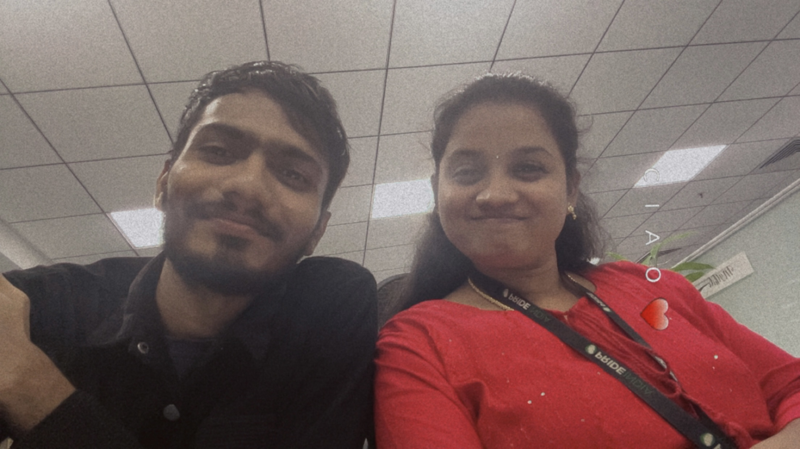
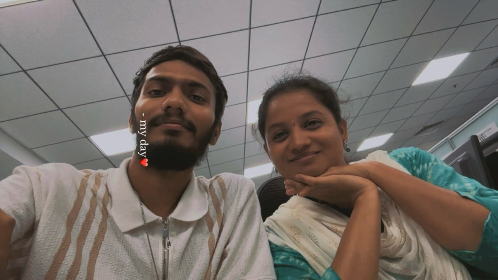

“To My Akka, My Closest Friend — A Heartfelt Apology to Mythu Platy"
Embark on a heartfelt journey by clicking "Timeline" first. Immerse yourself in the tapestry of our shared
moments, each word etched with the essence of our connection. Move forward to "Apology" and then "Letter" to
explore the profound emotions and genuine steps I'm eager to take for reconciliation. Every word penned reflects a
sincere commitment to make amends and cherish the beauty of our shared existence. Your understanding holds
immeasurable significance, weaving a narrative of love, growth, and redemption. Thank you for being part of this
extraordinary journey.
Timeline

When our paths first crossed, neither of us knew that an ordinary day at the office would become the beginning of something so special. ❤️
I still remember our first meeting so clearly. I walked into the meeting room and saw you sitting there alone. Before entering, I politely called, “Ma’am…” 😅 and that was the first time we spoke. You told me that you had also joined the company as a fresher, just like me. Somehow, that simple introduction turned into a long conversation about the job, salary, and everything in between. Before we even realized it, we were sitting together, talking to Sekar Anna for the first time as part of our team.
And then came one of those little coincidences that made us laugh. My name always came right after yours—Mythili Dhanasekaran, Ruban Kumar. Even our company IDs were next to each other. There was hardly any distance between our names. 😂❤️ And somehow, even in Excel, whenever we applied a filter, my name would always appear right under yours. It felt like Excel itself was trying to tell us something. 😅
Soon, we met Haritha and Jerry, and the four of us became a little team of our own. Breaks, dinners, random conversations, walking around together—wherever one of us went, somehow all four of us ended up together. What started as just colleagues slowly became a friendship filled with countless little memories. And even after two years of knowing each other, those memories still feel just as special. 🫶
I’ll never forget our MMM meeting either. Leo announced our names together—“Mythili Dhanasekaran, Ruban Kumar”—and asked us to sing a few lines. 😂 Somehow, that became one of those funny moments we still remember. I didn’t even sing that week, which made the whole situation even more fun. 😊
As our friendship grew, you started sharing things with me that were much deeper than ordinary conversations—your personal thoughts, your family situations, and the things you didn't easily share with everyone. That was when I truly realized that you trusted me.
I understood that you didn't see me as just another friend, but as someone close to you—someone you could talk to without worrying about being judged. And I want you to know that everything you have ever trusted me with has stayed with me. I have never shared those things with anyone. I protect those memories and those conversations because, to me, trust is one of the most important parts of our bond. ❤️
And just as you trusted me with your life, I slowly started sharing my own struggles and personal experiences with you too—things from my life even before I joined this company. Somewhere along the way, our conversations stopped being just conversations between colleagues and became something much deeper.
Then came the moment when I truly realized just how important you had become to me.
It happened because of Naveen. I became possessive when I saw you talking to him, and instead of saying anything, I became quiet. You noticed it. You came to me, consoled me, and reassured me that I was important to you—that my place in your life was special and irreplaceable.
That moment meant more to me than you probably realized.
For the first time, I felt like I had found the kind of close friendship I had never really experienced in my previous 13 years. You made me feel valued, understood, and important.
And then there was that little tissue paper that I still have with me. 🥹❤️
You wrote your name along with your father's name, your husband's name, and my name on that tissue paper while consoling me. It may have been just a small moment for you, but for me, it became a memory I never wanted to lose.
I still have that tissue paper.
Then came another beautiful little memory.
You asked me to take our first selfie together on your phone, almost like a little kid excited to capture a moment with a close friend. 😂❤️ And that picture became one of the first little pieces of our friendship that we could actually keep.
And then came September 19, 2025.
You were wearing a pink dress, and I was wearing blue. 💗💙
Looking back now, it wasn't just another day at the office. It was the day a simple “Ma’am…” slowly became a friendship filled with trust, laughter, memories, silly fights, countless conversations, and a bond that became incredibly important to me.
...

Our first real fight happened because of Naveen, when you shared that reel about that name. At that time, I got angry and became silent instead of talking to you properly. 😔 But what I still remember from that time is how you tried to reach me through those reels and apologized to me. 🥺🤍
And honestly, I loved that. I loved how we used to share reels with each other, express our feelings through them, and quietly show how much our friendship meant to both of us. 🫂✨ That little part of our friendship became something very special to me, and I genuinely wanted to continue it. ❤️🩹
Then came the time when I put the paper and started my notice period. Even during that phase, you showed me so much love, care, and affection as a friend. 🤍 I still remember those little things, and I loved them more than I probably ever told you. 🥹
I also regret that I wasn’t open enough about my own life and some of my personal things during that time. Looking back now, I wish I had shared more of myself with you instead of keeping those parts inside. 😔💭
When I rejoined the company, one of the reasons that mattered to me was you. 🤍 I don’t show my real value and attachment to everyone; I usually show that side of me only to people who are genuinely close to me. 🫂 I was happy that after I came back, we became normal again and started having those familiar conversations and moments. 😊🤍
But then things slowly changed when someone joined our team. I don’t even want to mention that person’s name here—you’ll understand who I’m talking about if you’re reading this. 👀
That’s when I started becoming increasingly jealous, insecure, and scared of losing the closeness we had. 😔💭 I started overthinking things that I shouldn’t have overthought. I became afraid that someone else might become closer to you and that I might lose the place I had in your life. 💔
Instead of dealing with those feelings maturely, I allowed them to control my actions. And that’s where I started going wrong. 😞
That’s why I interfered in things that were related to your work, asked unnecessary questions, kept looking for explanations, and put pressure on you when you didn’t deserve that pressure. 😔 I was trying to get reassurance from you because I was scared and insecure, but I now understand that my fear doesn’t justify the way I treated you. 🤍
And the day you cried because of all this is something I genuinely regret. 💔 Knowing that my words and actions hurt you enough to make you cry hurts me deeply. 😢
I tried many things afterward to stop myself from overthinking and reacting that way, but I struggled because I hadn’t properly learned how to handle my insecurity and fear of losing someone important to me. 🥺
That’s also why I kept asking you whether I was important to you, whether our friendship still mattered, and whether I still had the same place in your life. 🤍
Now I understand that you shouldn’t have had to repeatedly prove any of that to me. 🫂
I should have trusted the friendship we had built instead of letting my fears speak louder than my trust. ❤️🩹
Apology
Dear To My Akka, My Closest Friend,...
I am truly sorry for my actions...
I’m sorry for the words I said when I was angry, especially saying things that made it sound like you didn’t exist in my life. I’m sorry for repeatedly asking questions when I should have trusted you, for setting unnecessary boundaries, creating distance, avoiding you, getting angry, and reacting in ways that I now realize were unfair to you. 😔💔
Our friendship has always meant so much to me. I loved the little things between us—the reels we shared, the random conversations, the teasing, the laughter, the way we could talk about our lives, and the way we understood each other. 🫂🤍 Those things may look small from the outside, but they became some of the most precious memories to me. ✨
I also regret the times when I wasn’t open enough about my own life and personal things. I wish I had trusted you enough to share more of myself instead of keeping things inside. I can’t go back and change those moments, but I can acknowledge them honestly. ❤️🩹
When I became jealous and insecure, I let my fear of losing our closeness control my actions. I asked unnecessary questions, interfered where I shouldn’t have, and looked for reassurance instead of trusting you. I know now that my insecurity was mine to handle—it was never your responsibility to carry it for me. 🤍
I’m really, really sorry, Akka. 🥺🤍
I don’t want this apology to become another promise that sounds beautiful today but changes nothing tomorrow. I want to work on myself through my actions. I want to listen more, trust you more, respect your “no,” respect your space, control my reactions, and stop asking you to repeatedly prove that our friendship matters to you. 🌱🤍
You don’t have to forgive me immediately. You don’t have to reply immediately. You don’t have to make everything normal immediately.
Take whatever time you need. 🫂
I miss the friendship we had, and I hope that, when you’re comfortable and ready, we can slowly find our way back to the laughter, conversations, reels, teasing, and little moments that made our friendship special. 🤍✨
I’m not asking you to forget what happened. I’m asking for the chance to show you that I understood it.
I can’t change the past.
But I can change what I do from here.
So this time, I’ll let my actions speak. 🤍
No pressure. No expectations.
Just a sincere sorry from someone who truly values having you in his life. 🥺🤍
Letter from the Heart
A Friendship Beyond Every Chapter
This letter is filled with sincere emotions and a bond I hope life keeps carrying forward, through every season, every milestone, and every future memory we create together🤍✨
To My Akka, My Mythu Platy,
♾️ The Chapters I Hope We’ll Still Share
When I imagine the years ahead, I don’t only think about the memories we’ve already created. I also think about the memories that are still waiting for us—the moments we haven’t lived yet, the celebrations we haven’t shared, and the different versions of ourselves we’ll become along the way. 🤍✨
I hope that no matter how much life changes, our friendship remains one of those beautiful connections that grows with us instead of disappearing with time. 🌱🫂
Someday, when I stand at my wedding beside the person I choose as my life partner, I hope I’ll look around and see the people who have been truly meaningful to me—and I would be incredibly happy to see you standing there with my family, sharing that moment with me. 🥹🤍
And I hope our friendship becomes something that extends beyond just our memories too. I would love to be someone your daughter can look back on as a trusted family friend and, if you and she are comfortable with it, someday call me her Godfather. 🤍🫂
I want to be there for the important chapters of your life too—the celebrations, the ordinary days, the difficult moments, and all the little milestones in between. And I hope you’ll be there for mine in the same way. ✨
When I say “forever,” I don’t mean that life will always remain exactly the same. I mean that I hope the bond we have can continue through every season of life, with both of us freely choosing to stay connected, understand each other, and make space for one another. 🤍
And when I think about infinity, I think of it as a symbol of how deeply I hope this friendship lasts—not as a promise about something neither of us can know, but as a beautiful wish that the memories and meaning we’ve created together will always have a place in our lives. ♾️✨
From the friendship we have today, to the families we may build tomorrow, I hope there will always be another chapter for us to share. 🤍🫂